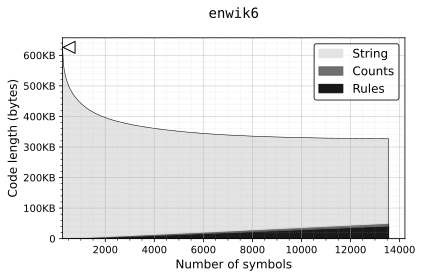
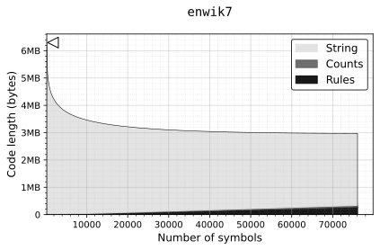

One of the more salient features of our cognition is the organization of related parts into wholes.
In the absence of clear statistical principles guiding this drive to construct, we attempt to reproduce similar structure by growing a prediction model greedily in the direction of maximal compression.
For this, we define a serialization format for text based on combinatorial objects equivalent to such a model, which produces codes of known lenghts (information), from which we derive a loss function that guides the deterministic construction of dictionaries, of which we note the appearance and efficiency in compression.
Note on Overfitting
When modeling data using ever growing numbers of parameters, the likelihood of the data can easily reach zero as the complexity of the data is transfered to the model instead of being distilled into their underlying features.
In machine learning, this is called overfitting and is best pictured by regression lines (predictions) drifting away in wild and unlikely interpolations as more parameters are added to the model.

This behavior is undesirable in machine learning as it undermines the generalizability of the model which is usually an important aspect of the exercise.
In the context of compression, where the prediction of unobserved data is of little importance, the phenomena is equally pathological: as the information of the data w.r.t. the model approaches zero, the information required to describe the model measurably increases in proportion.
While the solution to overfitting in machine learning almost always implicates carving off sections of the data to hide from the model only to be used for measuring generalizability, the context of compression offers a more complete solution: one needs only to measure the information (likelihood) of both the data and the model and stop when the gain in the information of the model begins to outweigh the loss in the information of the data given the model.
This inclusion of the model into the calculation is a basic requirement of parametric measurements of information to avoid falling into traps where information seems to magically disappear from compression.
Serializing Combinatorial Objects
As shown previously, counting the variety of parametrized systems can produce simple closed formulations of their information (code length) w.r.t. an optimal encoder.
For example, the information of a sequence of \(N\) symbols from an alphabet of size \(m\) with known individual counts \(n_0, n_1, ... n_{m-1}\) (i.e. a categorical MLE) is simply the \(\log\) of the multinomial coefficient with the same parameters:
\[{N \choose n_0,n_1,\ldots,n_{m-1}},\]
which is exactly the number of ways to order a set of \(N\) elements containing equivalence classes of sizes \(n_0,n_1,\ldots,n_{m-1}\).
Further, given a total order (e.g. lexicographic) on the summoned combinatorial object (here multiset permutations), one can derive so-called “ranking” and “unranking” algorithms to map to and from natural numbers. Reading the resulting numbers in their binary expansion, the process is equivalent in compression efficiency to entropy coding the sequence symbol-by-symbol using their derived probabilities.
Combinatorial descriptions therefore give both information content formulae and the codecs (encoder/decoder) to verify them.
Format Description
The order of a sequence of an alphabet with known counts has information content:
\[\underbrace{\log {N \choose n_0,n_1,\ldots,n_{m-1}}. \vphantom{\prod_{\displaystyle i}}} _{\displaystyle\mathrm{String} \vphantom{\prod}}\]
The count of each symbol in the alphabet has a variety equal to the binomial coefficient according to the stars-and-bars method:
\[N + m - 1 \choose m - 1\]
where the number of distribution of \(N\) identical values across \(m\) bins is counted as number of orderings of the \(N\) values (stars) and \(m-1\) separators (bars).
We prepend this code so that the string’s code (ranked multiset permutation) can be interpreted correctly:
\[\underbrace{\log {N + m - 1 \choose m - 1} \vphantom{\prod_{\displaystyle i}}} _{\displaystyle n_0,n_1,\ldots,n_{m-1} \vphantom{\prod}} + \underbrace{\log {N \choose n_0,n_1,\ldots,n_{m-1}} \vphantom{\prod_{\displaystyle i}}} _{\displaystyle\mathrm{String} \vphantom{\prod}}\]
This, in turn, assumes knowledge of parameters \(N\) and \(m\).
The length of the binary expansion of a natural number is on the order of \(\log_2 n\), but without the prefix property, the length of such an expansion (i.e. the cut-off point between the number’s code and the rest of the code) is unknowable by a decoder. To address this, a universal integer code (e.g. Elias) is used taking at most \(2\log_2 n\) bits:
\[\underbrace{2\log m\vphantom{\prod_{\displaystyle i}}} _{\displaystyle m \vphantom{\prod}} + \underbrace{2\log N\vphantom{\prod_{\displaystyle i}}} _{\displaystyle N \vphantom{\prod}} + \underbrace{\log {N + m - 1 \choose m - 1} \vphantom{\prod_{\displaystyle i}}} _{\displaystyle n_0,n_1,\ldots,n_{m-1} \vphantom{\prod}} + \underbrace{\log {N \choose n_0,n_1,\ldots,n_{m-1}} \vphantom{\prod_{\displaystyle i}}} _{\displaystyle\mathrm{String} \vphantom{\prod}}\]
which only leaves the dictionary of constructions to be encoded so that constructed symbols can be properly interpreted.
Inductive Constructions
The dictionary (alphabet) of constructions (symbols) is grown incrementally one-by-one, by appending construction rules consisting of two previously defined symbols (atomic or constructed) based on an assumption that a whole can only be statistically significant if both of its parts also are.
Substituting the parts in the string with the newly introduced symbol and repeating the process produces a sparse exploration into the space of \(n\)-grams which avoids the combinatorial explosion associated with assigning parameters to each possible combination of symbols and the requirement of deciding of a fixed construction length.
We start with an alphabet of the 256 bytes. The first construction rule is therefore one among
\[256 \times 256\]
possible pairs. With the second construction, we include the first introduced symbol:
\[256 \times 256 \times 257 \times 257 \times \ldots\]
In general, for \(m\) symbols, this has variety
\[\left(\frac{(m-1)!}{255!}\right)^2\]
which is information
\[\begin{align} \log\left(\left(\frac{(m-1)!}{255!}\right)^2\right) = 2\log\left(\frac{(m-1)!}{255!}\right). \end{align}\]
We can also get away with encoding \(m - 256\) instead of \(m\) since it will always be the case that \(m \geq 256\). The information content of our entire encoding is therefore:
\[\begin{align} I(m, \mathrm{\bf r}, N, \mathrm{\bf n}, \mathrm{\bf s}) =~&~ \underbrace{2\log (m-256)\vphantom{\prod_{\displaystyle i}}} _{\displaystyle m \vphantom{\prod}} + \underbrace{2\log \left(\frac{(m-1)!}{255!}\right)\vphantom{\prod_{\displaystyle i}}} _{\displaystyle\mathrm{{\bf r}: Rules} \vphantom{\prod}} + \underbrace{2\log N\vphantom{\prod_{\displaystyle i}}} _{\displaystyle N \vphantom{\prod}}\\[10pt] &+ \underbrace{\log {N + m - 1 \choose m - 1} \vphantom{\prod_{\displaystyle i}}} _{\displaystyle \mathrm{\bf n}: n_0,n_1,\ldots,n_{m-1} \vphantom{\prod}} + \underbrace{\log {N \choose n_0,n_1,\ldots,n_{m-1}} \vphantom{\prod_{\displaystyle i}}} _{\displaystyle\mathrm{{\bf s}: String} \vphantom{\prod}} \end{align}\]
which is only a function of dictionary size \(m\) and counts vector \(\mathrm{\bf n}: n_0, n_1, ..., n_{m-1}\).
Loss Function
Evaluating the amount of information of each field for each variation of the dictionary depending on what two symbols come next in the rule set is excessive.
First, the terms for parameter \(m\) and the rule set (dictionary) are constant in information regardless of which symbols make the new construction. While they determine when the program stops, they can be dropped when evaluating different pairs for rule introduction. Same goes for the encoding of \(N\) which is mostly constant between introductions and only a few bits of variation at specific junctures between powers of two.
For the introduction of a joint symbol with count \(n_{01}\), constructed from the symbols with counts \((n_0,n_1)\), the main terms that affect the total information are the term for the counts:
\[\begin{align} \Delta I(\mathrm{\bf n}) &= \log {N - n_{01} + m \choose m} - \log {N + m - 1 \choose m - 1} \\[5pt] &= \log \left(\frac{(N - n_{01} + m)!}{m! ~ (N - n_{01})!}\right) - \log \left(\frac{(N + m - 1)!}{(m - 1)! ~ N!}\right) \\[5pt] &= \log \left(\frac{(N - n_{01} + m)! ~ (m - 1)! ~ N!} {(N + m - 1)! ~ m! ~ (N - n_{01})!}\right) \\[5pt] &= \log \left(\frac{(N - n_{01} + m)! ~ N!} {(N + m - 1)! ~ m ~ (N - n_{01})!}\right) \\[5pt] \end{align}\]
and the term for the ordering of the string:
\[\begin{align} \Delta I(\mathrm{\bf s}) &= \log {N - n_{01} \choose n_0 - n_{01}, n_1 - n_{01},\ldots,n_{m-1}, n_{01}} - \log {N \choose n_0,n_1,\ldots,n_{m-1}}\\[5pt] &= \begin{cases} \log\left(\displaystyle \frac{(N - n_{01})! ~ n_0!} {N! ~ (n_0 - 2n_{01})! ~ n_{01}!} \right) & \text{when } s_0 = s_1 \\[5pt] \log\left(\displaystyle \frac{(N - n_{01})! ~ n_0! ~ n_1!} {N! ~ (n_0 - n_{01})! ~ (n_1 - n_{01})! ~ n_{01}!} \right) & \text{when } s_0 \neq s_1 \end{cases} \\[5pt] &= \log \left( \frac{(N - n_{01})! ~ n_0!}{N! ~ n_{01}!} \right) + \begin{cases} \log \left(\frac{\displaystyle 1}{\displaystyle (n_0 - 2n_{01})!} \right) & \text{when } s_0 = s_1 \\ \log \left(\frac{\displaystyle n_1!} {\displaystyle (n_0 - n_{01})! ~ (n_1 - n_{01})!} \right) & \text{when } s_0 \neq s_1 \end{cases} \end{align}\]
Together, some additional terms/factors cancel out:
\[\begin{align} \Delta I(\mathrm{\bf n},\mathrm{\bf s}) &= \log \left(\frac{(N - n_{01} + m)! ~ N!} {(N + m - 1)! ~ m ~ (N - n_{01})!}\right) + \log \left( \frac{(N - n_{01})! ~ n_0!}{N! ~ n_{01}!} \right) \\[5pt] & ~~~~ + \begin{cases} \log \left(\frac{\displaystyle 1}{\displaystyle (n_0 - 2n_{01})!} \right) & \text{when } s_0 = s_1 \\ \log \left(\frac{\displaystyle n_1!} {\displaystyle (n_0 - n_{01})! ~ (n_1 - n_{01})!} \right) & \text{when } s_0 \neq s_1 \end{cases} \\[5pt] &= \log \left(\frac{(N - n_{01} + m)! ~ n_0!} {(N + m - 1)! ~ m ~ n_{01}!} \right) + \begin{cases} \log \left(\frac{\displaystyle 1}{\displaystyle (n_0 - 2n_{01})!} \right) & \text{when } s_0 = s_1 \\ \log \left(\frac{\displaystyle n_1!} {\displaystyle (n_0 - n_{01})! ~ (n_1 - n_{01})!} \right) & \text{when } s_0 \neq s_1 \end{cases} \end{align}\]
which, by logarithmic identity, can be computed in an efficient and numerically stable way with an implementation of the log-factorial using the expansion
\[\log((N - n_{01} + m)!) + \log(n_0!) - \log((N + m - 1)!)~-~...\]
Finding the pair \((s_0,s_1)\) with joint count \(n_{01}\) and individual counts \((n_0,n_1)\) which minimize this function at each step in the evolution of the dictionary is sufficient to find the next rule to introduce to (locally) maximize compressibility.
Together with whatever changes to the length of the encoding of \(N\), as long as the reduction in code length offsets the increase in code length of the introduction of a new rule, we grow the rule set.
Implementation
We implement a greedy algorithm that, given a text file, repeatedly combines the pair of symbols that brings the greatest reduction in the overall information content until no pair produces a loss below zero. We log the introduced construction rules and information content at each step.
The program is written in Haskell:
Optimizations
A number of optimizations are required to run the derivations of rule sets to completion for inputs of significant length.
Symbol Counts Bookkeeping
As most of the symbol counts stay constant between iterations, it makes sense to keep those values stored in a vector (\(O(m)\)) and only modify those affected by the introduced rule.
Joint Counts Bookkeeping
Similarly, most of the joint counts stay contant between iterations, although there are at worst \(O(m^2)\) of them. This is worth it however as otherwise scanning the whole string for those counts becomes necessary with a time complexity of \(O(Nm^2)\). Then a single pass per iteration can update the joint counts wherever instances of the joint symbol occur with \(O(N)\) which is on the same order as the pass required to re-write the string anyway.
Joint Positions Bookkeeping
At this point, the program can run on inputs of thousands or millions of symbols, but the operation taking up most of the run time is the \(O(N)\) pass over the input required to 1) re-write joint occurences of \((s_0,s_1)\) into \(s_{01}\) and 2) update the joint counts map/table, decrementing the joints of \(s_0\) with the previous symbol and \(s_1\) with the next symbol and incrementing those with \(s_{01}\) instead.
This is especially pathological after the first 10% of symbols have been introduced and joint counts in natural text fall drastically following a Pareto-like drop in counts into a very low and long tail. The algorithm then spends most of its time performing \(O(N)\) scans of the working string looking for the few locations where the joint it has already decided to introduce appears.
To resolve this, we keep track of each location (\(O(\mathrm{max}(\mathrm{\bf n}))\)) each potential joint (\(O(m^2)\)) occurs at and read the changes in joint counts and write the changes in symbol in constant time, bypassing the need to scan over the whole string at each iteration. Because the size of the string shrinks at random points between iterations, positions are stored as pointers in a mutable doubly-linked list so that the introduced symbols can be written and the difference in joints can be read in \(O(1)\).
This incurs significant overhead at the begining of the execution of the program, but pays for itself many times over in the tail of the execution.
Results
The datasets of choice are initial truncations of different sizes of a 2006 version of English Wikipedia (XML format), following the example of the Large Text Compression Benchmark and Hutter Prize.
The first \(10^9\) bytes of the snapshot are referred to as enwik9. We
name truncations of smaller magnitudes accordingly:

$$$$
We show the total and relative share in code length (information) of the different components (terms) of the encoding (formula). The contributions of the encodings of parameters \(m\) and \(N\) are too small to be noticeable. The size of the encoding at \(m=256\) (starting state) is indicated with a marker on the Y axis:




As one would expect the bulk of the gain in compressability occur with the first few introduced symbols and tapers out as they produce fewer modifications to the string.
We also notice that greater compressability is achieved with greater inputs (and larger dictionaries).
We can measure the compressability, or “information density” resulting from the encoding at each point in the model’s evolution as a compression factor
\[\text{compression factor} = \frac{\text{original size}}{\text{compressed size}}\]
A compression factor slightly above 1.5 is achieved across the board with an empty dictionary simply by virtue of the encoding. For a given number of symbols, greater factors are achieved by smaller sets, probably due to the reduced variance of the data, but larger inputs produce gerater factors in the long run. The X axis is displayed in log-scale:

The exponentially increasing size of the input translates to exponentially increasing achieved dictionary sizes (and running time) and linearly increasing compression factors.